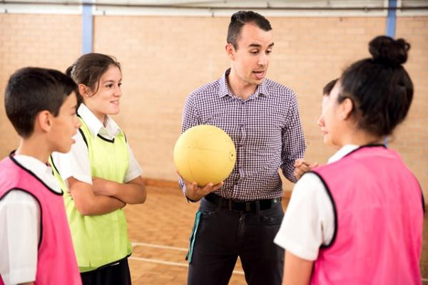

Student suicide: Self-care for school staff

Download the self care for school staff factsheet
Suicide can have a significant effect on a school community and can be traumatic for students, parents and school staff.
Following the death of a student, or students by suicide, it is normal for people to react in varied ways and experience different emotions. Grief and shock are common when a loss is experienced, however it can also elicit a range of other complex emotions including guilt, hurt, confusion, anger and remorse. These emotions can cause changes in people’s behaviours and ability to cope. This can be a difficult time for school staff as they are often dealing with their own grief and supporting students at the same time.
It is important to be aware of your own needs and to seek additional support when required. This not only safeguards your own welfare, but will help you to support your students. Below are some examples of common responses to the trauma of a suicide and ways to take care of yourself.
Common responses following a traumatic event/suicide
• Sleeping difficulties
• Reduced appetite/increased appetite
• Difficulty maintaining concentrating and attention
• Increased irritability and agitation
• Intrusive thoughts and feelings about the suicide
• Increased anxiety
• Restlessness
• Confusion
• Low motivation and energy
How you can look after yourself following a student suicide
• Seek out your support team Your school may have a designated support team. This may be made up of school wellbeing staff, chaplains, school counsellor/psychologist, nominated teachers, Employee Assistance Program (EAP), or support staff from your state or territory Department of Education or relevant school body. Some people prefer to use professional services such as those listed above, other people may feel that seeking out the support of friends, colleagues and family is what they need.
• Debrief with external professionals It may be helpful to debrief with mental health professionals rather than only talking about the suicide at home or in your private life. Professionals offer a different type of support to family and friends and can help you understand what you’re experiencing. Talking with professionals about your experience following a trauma can reduce the chance that you will experience longterm distress or difficulties.
• Monitor your own reactions and take care of your personal needs After being involved in a traumatic incident such as suicide, some people notice changes in their behaviour for some time following the event. Some of these behavioural changes may include: withdrawing from others, increased irritability and difficulty concentrating. Others may react quite differently and feel the need to take on all of the responsibility themselves. During this time, you may need a break from the classroom or any direct contact with students. Don’t ignore the need to care for yourself or to ask for more support. Reactions to the suicide may also emerge over time, particularly as the school observes special events or anniversaries of the suicide.
• Plan ahead where possible and have a contingency plan to manage difficult situations in the classroom/school It’s important to acknowledge that this is a difficult time and that it might be harder to manage certain situations. Try to be aware of what these situations are for you e.g. when students are disruptive, or if parents demand more of your time; and think of ways you can manage this differently.
• Maintain structure and routine in the classroom Following a suicide, it’s important for the school, but also for you, to try and return to normal routine as soon as is practical. This can help to make the students and staff feel less overwhelmed by the incident. After allowing for time to discuss the issues that have arisen from the incident, try to return to teaching your subject content.
• Time management Give yourself enough time to get to places and complete tasks. Try not to overload yourself with too much work or take on extra responsibility, including over committing yourself and feeling rushed. This will likely increase your stress levels.
• Take some time out and arrange for someone to relieve you if you feel unable to carry out your role If you feel unable to carry out your professional responsibilities, speak with the school principal and explore options for some time either outside of the classroom or the school. It may be detrimental to both yourself and your students/colleagues to continue in your role if you feel you are not coping.
• Use positive coping strategies to manage distress Some strategies may include: challenging unhelpful thinking e.g. “I should have done something to stop the suicide”, “I won’t be able to help anyone else”. Additionally, relaxation exercises, breathing techniques, meditation and the use of existing personal spiritual belief systems may be useful. Utilising some of these techniques can help to change your perspective on things and minimise distress. Here are a couple of websites that have information that may be helpful: www.cyh.com.au www.getselfhelp.co.uk
• Avoid unhealthy coping strategies Utilising unhealthy strategies such as drugs and alcohol as a means of coping with a traumatic event is only likely to complicate things, as it can increase emotional difficulties and take longer to process what’s happened.
• Maintain a healthy work/life balance This may include keeping strict working hours rather than spending longer than necessary at school and not taking work home with you. Try to maintain a healthy diet, as this can help to strengthen your immune system and prevent becoming physically unwell. Try and maintain an exercise routine which can be a healthy outlet for stress. Maintaining a consistent sleep routine is also important in feeling equipped to manage throughout the day. Try to plan pleasurable activities to assist in managing your mood.
• If difficulties persist beyond a few weeks after the suicide, staff are encouraged to seek additional support or professional help. You could try talking with your GP or seeking a referral for counselling
For more information on suicide or support and assistance visit headspace.org.au/schoolsupport or headspace.org.au
Acknowledgements
Child and Youth Health Government of South Australia www.cyh.com.au
Cognitive Behaviour Therapy Self-Help Resources www.getselfhelp.co.uk